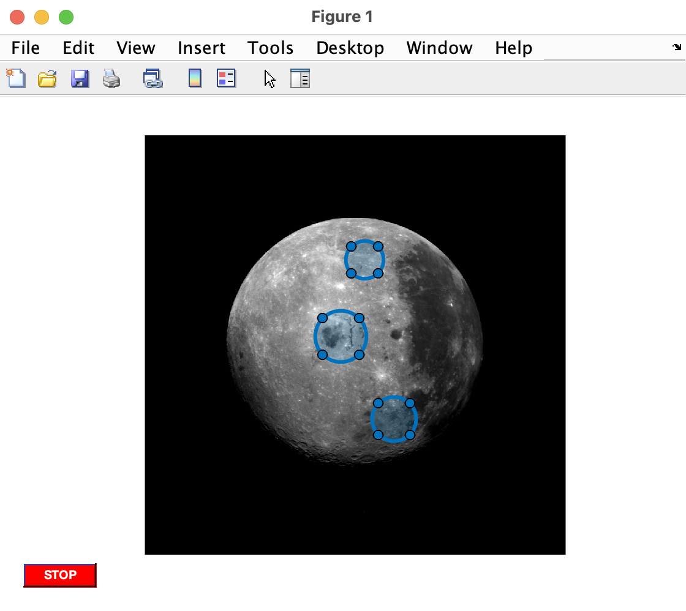

Segmentation and Region Processing
For Finding Stuff in Your Images and measuring them

Overview
Sometimes you only need to process just part (or parts) of an image. Or, you need identify objects inside an image. To do these things, you need to label the image as having important and unimportant parts. This labeling is known as segmentation and these smaller parts are often referred to as regions (or blobs or connected components). These regions are often stored as logical arrays that are the same size as the image being processed. In this logical array, which are often called binary images or masks, the regions to be processed will be represented as a cluster of 1's.
In this module, we will learn how to segment an image into regions, how to create a mask from those regions, and how to analyze the properties of those masks or how to use those masks for regional processing.
Things you should know
By the end of this module you should be able to:
-
Manually segment an image
-
Create a mask of an image using threshold values
Terminology you should be able to use
- Image Segmentation: the process of partitioning an image into parts or regions
- Binarization: the process of creating a binary image by binning the original image's intensity values based a histogram threshold value. The most common binarization operation results in two bins: a positives bin for intensity values above the threshold and a negatives bin for intensity values that fall below the threshold.
- Connected components: connected clusters of pixels in an image
- Otsu's Method: A popular algorithm used to come up with the threshold value for binarization from an image's histogram
- Region: aka Neighborhood aka Connected Components aka Blobs: areas of significance in an image. In a binary image, these regions are essentially contiguous TRUEs surrounded by FALSEs.
- ROI: region of interest, a part of an image captured by a drawing tool such as the ellipse tool or the polygon tool
- Mask: a binary image with the same dimensions as a grayscale image, but which has
TRUEsin the locations corresponding to regions of interest andFALSEseverywhere else.
Relevant MATLAB Stuff you should read
Important Functions you should know
- drawcircle - Create customizable circular ROI
- graythresh - Global image threshold using Otsu's method (input image)
- otsuthresh - Global histogram threshold using Otsu's method (input histogram)
- imbinarize - Binarize 2-D grayscale images thresholding
Segmentation
Segmentation is the process of selecting and labeling regions in an image. Each region represents a span of connected pixels and you can have more than one region. Segmentation is often used to identify objects in image and capture relevant metrics such as area and average pixel intensity of the object.
Consider the following image of the moon:
This image can clearly be segmented into two parts: pixels that are in Space and pixels that are on the Moon.
Manual Segmentation
Often the most straightforward way to segment an image (and the most time-consuming) is to manually outline the region of interest. A manual outline is typically called a Region-of-Interest or ROI.
MATLAB includes a collection of ROI tools with differing shapes that you can use to manually segment images, as described in the ROI-based processing documentation. Shape options include circles, ellipses, polygons, lines, and others.
The following example code activates the Circle ROI tool, allowing you to draw a circle around the moon and create your very first ROI. Here we use the function drawcircle, which activates the ROI tool and returns a handle to the ROI, called simply roi.
After running this code, a picture of the moon will appear. Hover the mouse over the image. The arrow should change to a cross-hair indicating that the ROI tool is activated. To draw the circle, simply click and drag the cross-hair from the top of the moon to the bottom of the moon. Release the mouse button when the ROI covers the moon. If your circle is too large or too small, simply click on one of the four vertices to resize the circle. As you can see in the right panel in the above image, we have successfully segmented (or masked) our moon.
Notice that the handle roi has the cube icon () in the workspace. This identifies the variable as an object. An object is kind of like a variable/function combo. In this example, the object contains all of the data and methods needed to manipulate the ROI that you just drew. For example, the following returns the x- and y- coordinates of the ROI center and its radius in pixels.
| Display ROI Center coordinates | |
|---|---|
| Display ROI Radius | |
|---|---|
If you move the ROI, the coordinates will automatically be updated. If you resize the ROI, the radius will be updated.
The object handle also includes functions that can be evoked using dot notation. For example, the code roi.wait executes a wait function, which tells MATLAB to pause execution of the code until you have finished drawing the ROI to your specifications. MATLAB waits until you double-clicked on the ROI. This allows you to draw and move the ROI at your leisure without worrying about the code continuing to execute without your final input. Once you double-click inside the ROI and the code will resume execution after the roi.wait line. The function roi.createMask creates a mask from your ROI. This mask is a binary image that has the same dimensions as the original image but with TRUEs at locations that correspond to inside the ROI, and FALSEs everywhere else.
Multiple Manual Segmentations
Sometimes, you need to segment multiple ROIs sequentially. To simplify this process, we can use a WHILE LOOP to continue the segmentation process until the user indicates they would like to stop.
The following code allows us to segment multiple circles on the moon. To use, activate the code block. When the image comes up, draw a circle on each crater that you want to capture. Make sure that you double-click on the crater when you're finished. And then draw the next crater. When you're done, press the stop button.
In this code, we start by adding a push-button (labeled "STOP") to the figure. The sole function of this button is to delete the figure in which it exists. This is accomplished by setting the callback property of the button to delete(gcbf). The callback function is the function that is called when the button is pressed. gbcf is a function that points to the current figure, so delete(gcbf) deletes the current figure. Once you delete the figure, everything inside of the figure is deleted as well, including the button. So, this acts kind of like a self-destruct function. Pretty cool.

Before the WHILE LOOP, we also create a logical array, crater_mask, that is the same size as the image and which will hold the masks for our craters.
Then, we initiate the WHILE LOOP, which is contingent on the existence of the STOP button: ishandle(button_handle). The ishandle function asks if the button still exists. So, once you press the button you destroy the figure, which destroys both the button and the image, and ultimately stops the WHILE LOOP.
Inside the WHILE LOOP, we have the code for generating ROIs and masks from these ROIs. Notice that we perform a logical OR operation to combine the mask created by the ROI with the pre-initialized mask, crater_mask.
When the loop ends, we overlay the image with our crater_mask.
Thresholding
Manual segmentation can be a bit of a drag (see what I did there) and very time-consuming. A far simpler way to segment an image would be to automate the processlet the computer do it.
Thresholding is the process of generating binary images from grayscale images based on an intensity threshold (or cut-off). Any pixel intensity equal to or greater than the cut-off is set to true, whereas any pixel intensity value below the cut-off is set to false.
Thresholding by Logical Operation
The simplest way to threshold is to choose a cut-off and then apply a logical operation.
For example, the space pixels in the moon image all have an intensity of 0. You can confirm this by "Zooming to Pixels" in the imageViewer: in the imageViewer "Viewer" tab, under the "ZOOM" section, select "Zoom to Pixels" in the pop-up menu. Be sure that the "Show Pixels Values" checkbox is checked.
Zoom to Pixels. This is what you should see when you Zoom to Pixels. Left Panel. An overview of the image with a small blue rectangle indicating the region of zoom. You can click and drag this rectangle around to inspect different regions of the image. Right Panel The zoomed-in region showing an enlarged view of the moon-space boundary image, down to the level of the pixels. Inside each pixel, is the letter I followed by the pixel intensity. Notice that most of the black pixels have an intensity of
0, while the brighter, lighter gray pixels have an intensity greater than 0.
Here we simply perform a relational operation on the moon along the lines of "find all pixels with an intensity great than zero":
A binary image that masks the moon.
NOTE: This is an unusually easy image to segment. Most images would have more noise in the segmentation.
Threshold by algorithm
In the previous example, we visually inspected the image and found that most space pixels had an intensity of 0 whereas the moon pixels had intensity values greater than 0. Which means that there is an abrupt change in pixel intensity values at the edge of the moon. This edge can be seen in the image's histogram:
Notice the propensity of space pixels (intensity of 0) while most of the moon's intensity values fall between 25 and 200.
Wouldn't it be nice if we could train a computer to read an image's histogram and come up with a threshold all on its own, leaving us time to work on our instagram posts or Tik-tok videos? Well, in fact, we have, and this method is called Otsu's Method (so, technically Otsu came up with this method). This algorithm assumes that an image contains two classes of pixels (background and foreground pixels) and it then calculates a threshold that best separates these pixels based on the image's histogram. Note, there are other algorithms out there, but Otsu's is one of the most commonly used algorithms for thresholding. Otsu was the man.
The function graythresh uses Otsu's method and returns a threshold value. All we do is plug in the image variable, as follows:
| Get Cut-off | |
|---|---|
and we get a cut-off value in the range from 0 to 1 (the double class range). One thing to emphasize here is that graythresh converts the input image into a double class before performing its magic. And then, it spits out the result as a double. So keep that in mind.
Now that we have a cut-off value, we simply need to run the logical operation. However, since the cut-off value is a double class while the image is still a uint8 class, we need to rescale the cutoff to the 8-bit class range before proceeding. The function im2uint8 simplifies this:
| Convert value to double | |
|---|---|
The cutoff variable is now a class uint8 and its value falls in the 0-255 range. 70 seems a little high, considering most space pixels appeared to have a value of 0, but we'll try it anyway.
As before, we'll use a logical relational operation to create a binary image and then use the function imshowpair with a third input of 'montage' to display the original image and the mask side by side:
| Threshold using Otsu's method | |
|---|---|
Andthe segmentation sort of works. True, the algorithm lumped the crater pixels with the space pixels, so those didn't get masked, but this kind of result often happens with automated segmentation techniques. Computers just aren't that smart.
Image Pre-processing
Because computers are kind of dumb, you will often need to preprocess your image to make the thresholding task really easy for the computer. For the moon image, one way to do so would be to reduce the contrast between the crater pixels and the pixels from the rest of the moon. As we discussed in the Enhancement Module, we can do this using gamma and imadjust. Then, we just repeat the steps from above.
| Preprocess, then Threshold | |
|---|---|
And plot the results to see how we did:
And the thresholding works much better. Notice how we eliminated the shadows in the preprocessed image (gamma-adjusted moon). In the histogram, we can see how we shifted the moon pixels far to the right and away from the space pixels, which are still locked at 0. So, it was a much easier task for the algorithm to come up with a cut-off, shown here as a dotted red line, that separates the moon pixels from the space pixels.
Thresholding Functions
Of course, there are thresholding functions, such as imbinarize which simplify much of the process of finding a threshold and applying it to the image. For example, this code
results in this:
Which is pretty good for a simple function call, but could still use some image pre-processing. The mask also needs to be cleaned up, which is something we'll talk about in the next module